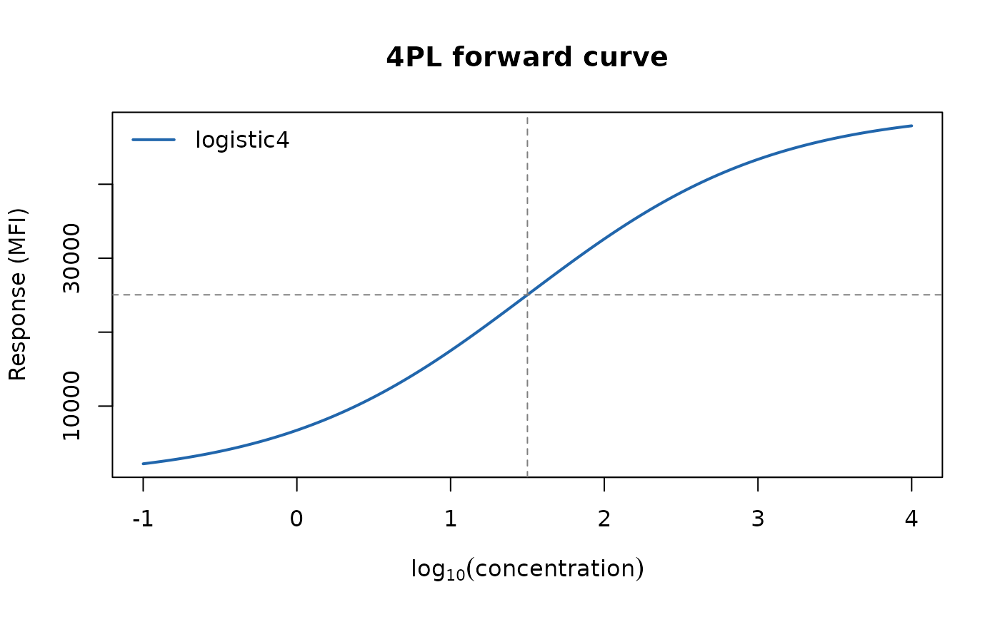
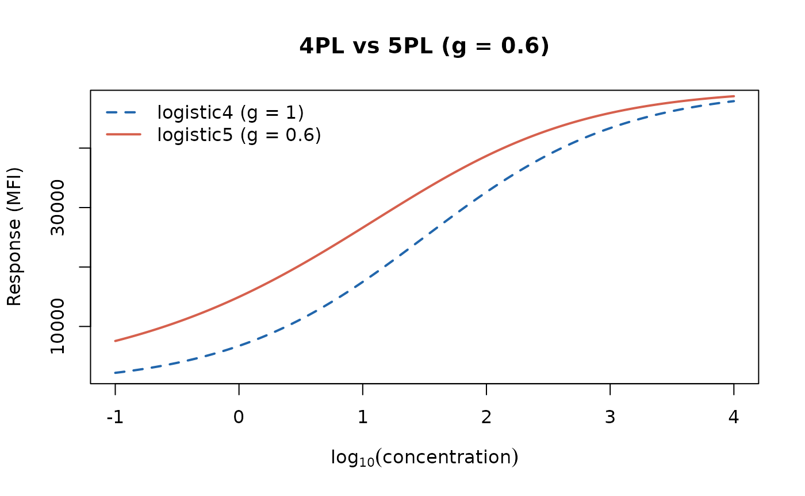
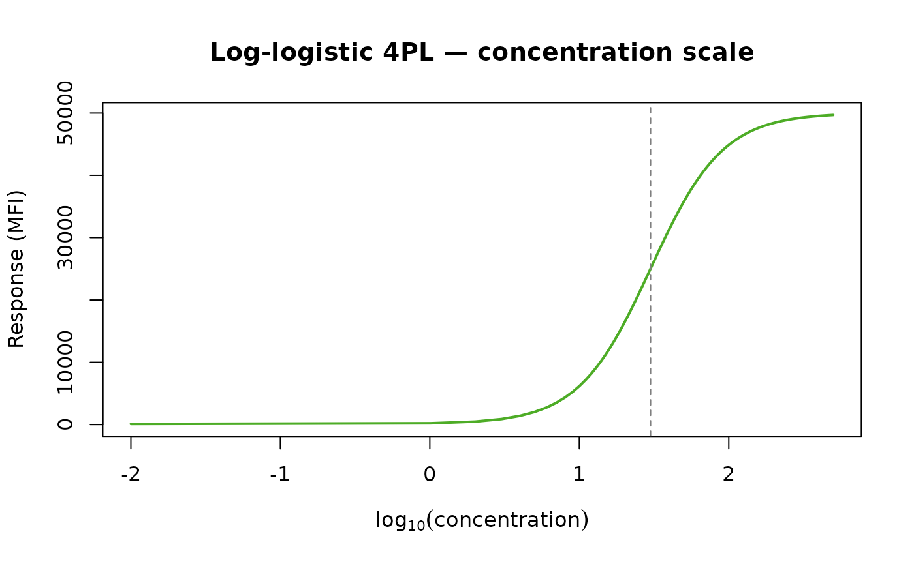
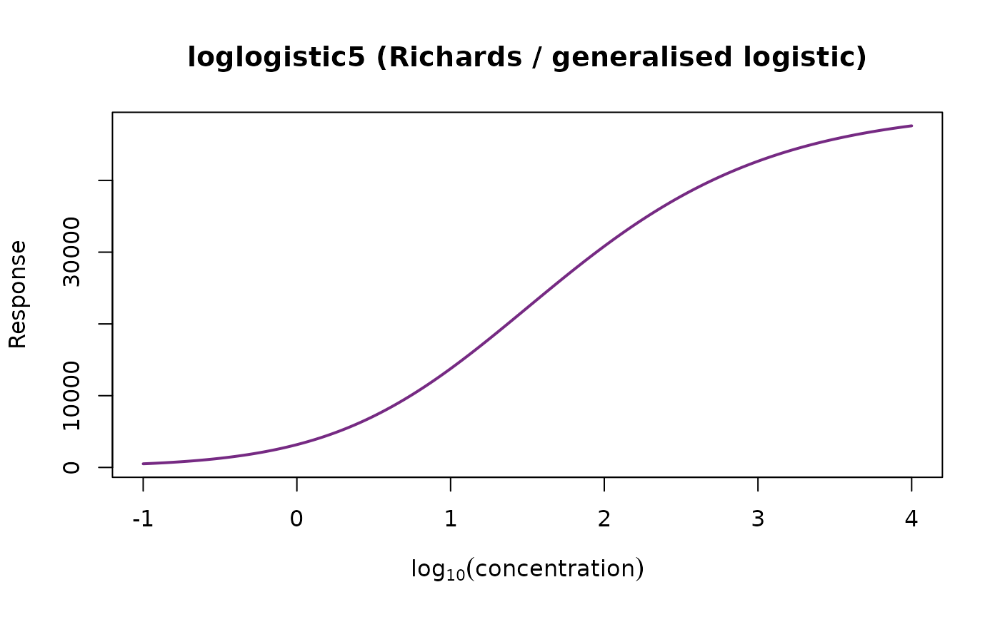
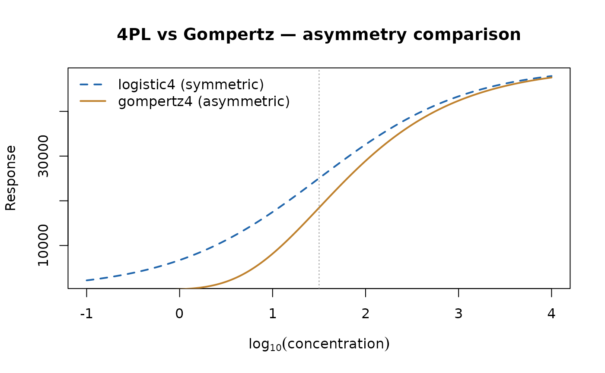
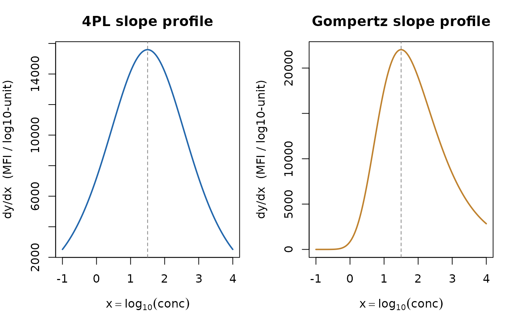
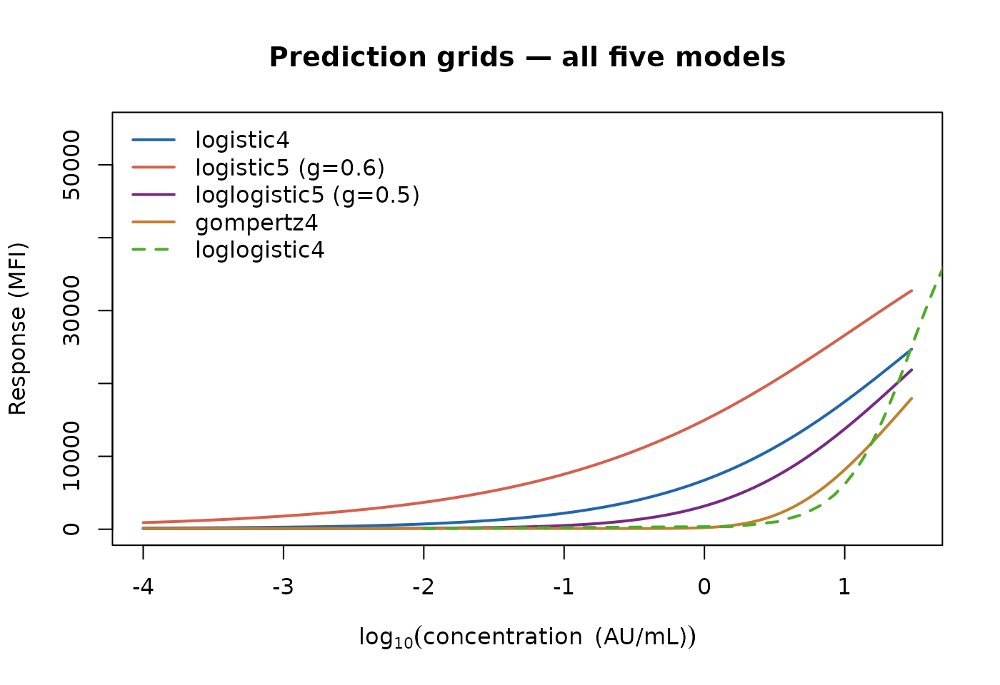

Model Forms: Mathematics of the Five curveRcore Calibration Models
Forward functions, inverses, derivatives, gradient factory, and prediction grids
Source:vignettes/model-forms.Rmd
model-forms.RmdIntroduction
This vignette is a self-contained mathematical reference for the five sigmoidal calibration-curve models implemented in curveRcore. It documents the forward functions, their analytical inverses, first and second derivatives, the gradient-factory used for delta-method error propagation, and the prediction-grid utilities shared by curveRfreq and curveRbayes.
No model fitting is performed here. The audience is a statistician or assay scientist who wants to understand the mathematics before—or independently of—running a full calibration workflow. For a worked end-to-end analysis, see the companion vignette Calibration Curve Workflows.
Notation and conventions
All five models share the following parameter convention, enforced across the entire curveR ecosystem:
| Symbol | Role | Constraint |
|---|---|---|
| Lower asymptote (baseline response) | ||
| Scale / slope parameter | ||
| Inflection-point location on the -axis | real | |
| Upper asymptote (saturation response) | ||
| Asymmetry parameter (5-parameter models only) | ||
| Independent variable passed to the model | model-dependent |
The independent variable
is scale-agnostic: any monotone transformation
(e.g. )
is applied upstream in R before the model is called. The models
themselves do not perform any transformation internally, except
loglogistic4 and loglogistic5, which require
on the raw (un-logged) concentration scale.
Forward Model Equations
Four-Parameter Logistic (4PL) — logistic4
The 4PL is symmetric about its inflection point . It is the workhorse model for log-linear immunoassay standard curves.
# Parameter set used throughout this vignette
p4 <- list(a = 100, b = 0.8, c = 1.5, d = 50000)
x_seq <- seq(-1, 4, length.out = 300)
y_4pl <- logistic4(x_seq, p4$a, p4$b, p4$c, p4$d)
plot(x_seq, y_4pl, type = "l", lwd = 2, col = "#2166AC",
xlab = expression(log[10](concentration)),
ylab = "Response (MFI)",
main = "4PL forward curve")
abline(v = p4$c, h = (p4$a + p4$d) / 2, lty = 2, col = "grey50")
legend("topleft", legend = "logistic4", lwd = 2, col = "#2166AC", bty = "n")
Five-Parameter Logistic (5PL) — logistic5
When this reduces exactly to the 4PL. compresses the lower shoulder (skews toward the upper asymptote); compresses the upper shoulder. The inflection point shifts with :
p5 <- list(a = 100, b = 0.8, c = 1.5, d = 50000, g = 0.6)
y_5pl <- logistic5(x_seq, p5$a, p5$b, p5$c, p5$d, p5$g)
plot(x_seq, y_4pl, type = "l", lwd = 2, col = "#2166AC", lty = 2,
xlab = expression(log[10](concentration)),
ylab = "Response (MFI)",
main = "4PL vs 5PL (g = 0.6)")
lines(x_seq, y_5pl, lwd = 2, col = "#D6604D")
legend("topleft",
legend = c("logistic4 (g = 1)", "logistic5 (g = 0.6)"),
lwd = 2, col = c("#2166AC", "#D6604D"), lty = c(2, 1), bty = "n")
Four-Parameter Log-Logistic — loglogistic4
Here
is the EC50 on the raw concentration scale, and
is the Hill coefficient. This is the classical Hill equation /
dose-response parameterisation. Domain restriction:
requires
.
When working on the
scale, logistic4 is algebraically equivalent and
preferred.
p_ll4 <- list(a = 100, b = 1.8, c = 30, d = 50000) # c is EC50 in AU/mL
x_conc <- seq(0.01, 500, length.out = 500)
y_ll4 <- loglogistic4(x_conc, p_ll4$a, p_ll4$b, p_ll4$c, p_ll4$d)
plot(log10(x_conc), y_ll4, type = "l", lwd = 2, col = "#4DAC26",
xlab = expression(log[10](concentration)),
ylab = "Response (MFI)",
main = "Log-logistic 4PL — concentration scale")
abline(v = log10(p_ll4$c), lty = 2, col = "grey50")
Five-Parameter Generalised Logistic (Richards) —
loglogistic5
This is the Richards / generalised logistic curve (Richards 1959). Despite the name
loglogistic5,
here is the log-transformed concentration (i.e. the model
operates on the log scale). When
the formula approaches the Gompertz; when
it matches the 4PL up to a parameter rescaling.
p_ll5 <- list(a = 100, b = 1.2, c = 1.5, d = 50000, g = 0.5)
y_ll5 <- loglogistic5(x_seq, p_ll5$a, p_ll5$b, p_ll5$c, p_ll5$d, p_ll5$g)
plot(x_seq, y_ll5, type = "l", lwd = 2, col = "#762A83",
xlab = expression(log[10](concentration)),
ylab = "Response",
main = "loglogistic5 (Richards / generalised logistic)")
Four-Parameter Gompertz — gompertz4
The Gompertz is intrinsically asymmetric: it rises steeply from the lower asymptote and approaches the upper asymptote more gradually (Gompertz 1825). The inflection occurs at , where .
p_g4 <- list(a = 100, b = 1.2, c = 1.5, d = 50000)
y_g4 <- gompertz4(x_seq, p_g4$a, p_g4$b, p_g4$c, p_g4$d)
plot(x_seq, y_4pl, type = "l", lwd = 2, col = "#2166AC", lty = 2,
xlab = expression(log[10](concentration)),
ylab = "Response",
main = "4PL vs Gompertz — asymmetry comparison")
lines(x_seq, y_g4, lwd = 2, col = "#BF812D")
abline(v = p_g4$c, lty = 3, col = "grey60")
legend("topleft",
legend = c("logistic4 (symmetric)", "gompertz4 (asymmetric)"),
lwd = 2, col = c("#2166AC", "#BF812D"), lty = c(2, 1), bty = "n")
Analytical Inverse Functions
Each model has a closed-form inverse that maps an observed response back to the concentration scale. Two variants exist for every model:
-
inv_<model>(y, a, b, c, d)— is a free (estimated) parameter. -
inv_<model>_fixed(y, fixed_a, b, c, d)— is supplied as an external constant (e.g. from a plate blank mean), reducing Monte Carlo uncertainty.
All functions return NA for
values outside the open interval
.
Worked example: round-trip verification
A useful sanity check is to confirm to machine precision.
x_true <- 2.0 # log10(100 AU/mL)
# ---- 4PL ----
y_fwd <- logistic4(x_true, p4$a, p4$b, p4$c, p4$d)
x_back <- inv_logistic4(y_fwd, p4$a, p4$b, p4$c, p4$d)
cat(sprintf("4PL round-trip error: %.2e\n", abs(x_back - x_true)))
#> 4PL round-trip error: 0.00e+00
# ---- 5PL ----
y_fwd <- logistic5(x_true, p5$a, p5$b, p5$c, p5$d, p5$g)
x_back <- inv_logistic5(y_fwd, p5$a, p5$b, p5$c, p5$d, p5$g)
cat(sprintf("5PL round-trip error: %.2e\n", abs(x_back - x_true)))
#> 5PL round-trip error: 0.00e+00
# ---- loglogistic4 ----
x_ll4 <- log10(100) # = 2.0; x_conc must be positive
y_fwd <- loglogistic4(100, p_ll4$a, p_ll4$b, p_ll4$c, p_ll4$d)
x_back <- inv_loglogistic4(y_fwd, p_ll4$a, p_ll4$b, p_ll4$c, p_ll4$d)
cat(sprintf("LL4 round-trip error: %.2e\n", abs(x_back - 100)))
#> LL4 round-trip error: 1.42e-14
# ---- loglogistic5 ----
y_fwd <- loglogistic5(x_true, p_ll5$a, p_ll5$b, p_ll5$c, p_ll5$d, p_ll5$g)
x_back <- inv_loglogistic5(y_fwd, p_ll5$a, p_ll5$b, p_ll5$c, p_ll5$d, p_ll5$g)
cat(sprintf("LL5 round-trip error: %.2e\n", abs(x_back - x_true)))
#> LL5 round-trip error: 0.00e+00
# ---- Gompertz ----
y_fwd <- gompertz4(x_true, p_g4$a, p_g4$b, p_g4$c, p_g4$d)
x_back <- inv_gompertz4(y_fwd, p_g4$a, p_g4$b, p_g4$c, p_g4$d)
cat(sprintf("G4 round-trip error: %.2e\n", abs(x_back - x_true)))
#> G4 round-trip error: 4.44e-16All errors should be at or below , confirming numerical consistency between the forward and inverse functions.
Effect of fixing on back-calculated concentration
When the lower asymptote is fixed at a known value (e.g. the mean of blank wells), the resulting inverse uses fewer estimated parameters and yields narrower confidence intervals.
# Suppose we know the blank mean is 95 MFI
a_fixed <- 95
y_test <- 10000 # an observed sample MFI
x_free <- inv_logistic4(y_test, p4$a, p4$b, p4$c, p4$d)
x_fixed <- inv_logistic4_fixed(y_test, a_fixed, p4$b, p4$c, p4$d)
cat(sprintf("Back-calculated x (a free): %.4f\n", x_free))
#> Back-calculated x (a free): 0.3829
cat(sprintf("Back-calculated x (a fixed): %.4f\n", x_fixed))
#> Back-calculated x (a fixed): 0.3833Derivatives
First derivatives (dy/dx)
All first derivatives are positive when and , confirming strict monotonicity.
Second derivatives (d²y/dx²)
Second derivatives locate the inflection points and characterise the curvature of each shoulder. Analytical forms exist for the 4PL and Gompertz; numerical central-difference approximations are used for the three remaining models.
5PL, LL4, LL5 (numerical) — d2x_logistic5,
d2x_loglogistic4, d2x_loglogistic5
For models where closed-form second derivatives are algebraically unwieldy, a symmetric central-difference scheme is used with step size :
This yields accuracy; for typical parameter magnitudes the approximation error is below .
Worked example: slope at an arbitrary point and at the inflection
x_eval <- 2.0 # evaluate at log10(100) AU/mL
# ---- 4PL first derivative ----
slope_4pl <- dydx_logistic4(x_eval, p4$a, p4$b, p4$c, p4$d)
slope_inf <- (p4$d - p4$a) / (4 * p4$b) # analytical inflection slope
cat(sprintf("4PL dy/dx at x=2.0 : %.2f MFI / log10-unit\n", slope_4pl))
#> 4PL dy/dx at x=2.0 : 14164.85 MFI / log10-unit
cat(sprintf("4PL dy/dx at x=c=%.1f: %.2f (formula: (d-a)/(4b))\n",
p4$c, slope_inf))
#> 4PL dy/dx at x=c=1.5: 15593.75 (formula: (d-a)/(4b))
# ---- Gompertz first derivative at inflection ----
slope_g4 <- dydx_gompertz4(p_g4$c, p_g4$a, p_g4$b, p_g4$c, p_g4$d)
slope_g4_inf <- p_g4$b * (p_g4$d - p_g4$a) / exp(1)
cat(sprintf("\nGompertz dy/dx at inflection (x=c): %.2f\n", slope_g4))
#>
#> Gompertz dy/dx at inflection (x=c): 22028.62
cat(sprintf("Gompertz formula b*(d-a)/e : %.2f\n", slope_g4_inf))
#> Gompertz formula b*(d-a)/e : 22028.62
# ---- Visualise slope profile across the curve ----
slopes_4pl <- dydx_logistic4(x_seq, p4$a, p4$b, p4$c, p4$d)
slopes_g4 <- dydx_gompertz4(x_seq, p_g4$a, p_g4$b, p_g4$c, p_g4$d)
par(mfrow = c(1, 2), mar = c(4, 4, 3, 1))
plot(x_seq, slopes_4pl, type = "l", lwd = 2, col = "#2166AC",
xlab = expression(x == log[10](conc)),
ylab = "dy/dx (MFI / log10-unit)",
main = "4PL slope profile")
abline(v = p4$c, lty = 2, col = "grey50")
plot(x_seq, slopes_g4, type = "l", lwd = 2, col = "#BF812D",
xlab = expression(x == log[10](conc)),
ylab = "dy/dx (MFI / log10-unit)",
main = "Gompertz slope profile")
abline(v = p_g4$c, lty = 2, col = "grey50")
# Confirm d²y/dx² = 0 at the 4PL inflection
d2_at_inf <- d2x_logistic4(p4$c, p4$a, p4$b, p4$c, p4$d)
cat(sprintf("4PL d²y/dx² at inflection: %.2e (expect 0)\n", d2_at_inf))
#> 4PL d²y/dx² at inflection: -0.00e+00 (expect 0)
# Numerical second derivative for the 5PL
d2_5pl_at_c <- d2x_logistic5(p5$c, p5$a, p5$b, p5$c, p5$d, p5$g)
cat(sprintf("5PL d²y/dx² at x=c : %.4f\n", d2_5pl_at_c))
#> 5PL d²y/dx² at x=c : -3086.3885
# Note: the 5PL inflection is at x = c + b*log(g), not at x = c
x_inf_5pl <- p5$c + p5$b * log(p5$g)
d2_5pl_at_xinf <- d2x_logistic5(x_inf_5pl, p5$a, p5$b, p5$c, p5$d, p5$g)
cat(sprintf("5PL d²y/dx² at x_inf=%.3f: %.2e (expect ~0)\n",
x_inf_5pl, d2_5pl_at_xinf))
#> 5PL d²y/dx² at x_inf=1.091: 3.64e-02 (expect ~0)Gradient Factory: make_inv_and_grad_fixed
Purpose
Delta-method confidence intervals for back-calculated concentrations require three quantities for each observed response :
- — the point estimate.
- — sensitivity of to each model parameter.
- — sensitivity of to measurement error in .
The uncertainty in is then:
where is the parameter covariance matrix and is the assay noise variance at .
API
fns <- make_inv_and_grad_fixed(model, fixed_a = NULL)Arguments
-
model— character string, one of"logistic4","logistic5","loglogistic4","loglogistic5","gompertz4". -
fixed_a— numeric scalar orNULL. If non-NULL, is treated as a known constant and excluded from , typically reducing the number of free parameters from 4 (or 5) to 3 (or 4).
Return value
A list of three closures, each with signature
function(y, p) where p is the named vector
returned by coef(fit):
| Closure | Returns |
|---|---|
$inv(y, p) |
Scalar |
$grad(y, p) |
Named numeric vector |
$grad_y(y, p) |
Scalar |
Worked example: gradient factory in action
# Simulate a coefficient vector as would come from coef(fit)
p_hat <- c(a = 100, b = 0.8, c = 1.5, d = 50000)
# Build the closure set for 4PL with a estimated freely
fns_free <- make_inv_and_grad_fixed("logistic4", fixed_a = NULL)
y_obs <- 15000 # observed MFI
x_hat <- fns_free$inv(y_obs, p_hat)
g_hat <- fns_free$grad(y_obs, p_hat)
gy_hat <- fns_free$grad_y(y_obs, p_hat)
cat(sprintf("Back-calculated log10(conc): %.4f\n", x_hat))
#> Back-calculated log10(conc): 0.8168
cat("Gradient w.r.t. theta:\n")
#> Gradient w.r.t. theta:
print(round(g_hat, 5))
#> a b c d
#> -0.00005 -0.85399 1.00000 -0.00002
cat(sprintf("Gradient w.r.t. y: %.6f\n", gy_hat))
#> Gradient w.r.t. y: 0.000077
# ---- Verify against finite differences ----
eps <- 1e-6
fd_grad <- sapply(names(p_hat), function(nm) {
p_up <- p_hat
p_up[[nm]] <- p_hat[[nm]] + eps
(fns_free$inv(y_obs, p_up) - x_hat) / eps
})
cat("\nFinite-difference check (should match grad above):\n")
#>
#> Finite-difference check (should match grad above):
print(round(fd_grad, 5))
#> a b c d
#> -0.00005 -0.85399 1.00000 -0.00002
# ---- With fixed_a ----
fns_fixed <- make_inv_and_grad_fixed("logistic4", fixed_a = 95)
g_fixed <- fns_fixed$grad(y_obs, p_hat[c("b", "c", "d")])
cat("\nGradient with fixed a=95 (b, c, d only):\n")
#>
#> Gradient with fixed a=95 (b, c, d only):
print(round(g_fixed, 5))
#> b c d
#> -0.85365 1.00000 -0.00002Applying the delta-method variance formula
# A toy parameter covariance matrix (realistic order-of-magnitude)
V_theta <- diag(c(a = 4, b = 0.002, c = 0.01, d = 250000))
rownames(V_theta) <- colnames(V_theta) <- names(p_hat)
sigma_y <- 200 # assay CV ≈ 1.3% at MFI=15000
var_x_param <- as.numeric(t(g_hat) %*% V_theta %*% g_hat)
var_x_meas <- gy_hat^2 * sigma_y^2
var_x_total <- var_x_param + var_x_meas
cat(sprintf("Variance from parameter uncertainty: %.5f (log10 units^2)\n",
var_x_param))
#> Variance from parameter uncertainty: 0.01159 (log10 units^2)
cat(sprintf("Variance from measurement noise : %.5f\n", var_x_meas))
#> Variance from measurement noise : 0.00023
cat(sprintf("Total variance in back-calculated x: %.5f\n", var_x_total))
#> Total variance in back-calculated x: 0.01182
cat(sprintf("95%% CI half-width: ± %.4f log10 units\n",
qnorm(0.975) * sqrt(var_x_total)))
#> 95% CI half-width: ± 0.2131 log10 unitsPrediction Grid Utilities
generate_prediction_grid
The prediction grid is a data frame of concentration values at which the fitted curve and its confidence band are evaluated for plotting and interpolation. Both curveRfreq and curveRbayes use the same grid structure, ensuring visual consistency.
generate_prediction_grid(
std_curve_conc,
n_grid = 200L,
grid_min_conc = 1e-4,
grid_max_conc = NULL,
is_log_independent = TRUE
)Key arguments
-
std_curve_conc— the maximum standard concentration (AU/mL). Whengrid_max_conc = NULL, this value is used as the upper boundary. -
n_grid— number of evenly-spaced grid points. Default 200 gives smooth curves without excessive computation. -
grid_min_conc— lower boundary of the grid on the raw scale. Must be . -
is_log_independent— ifTRUE(default), grid points are evenly spaced on the scale, matching the fitting scale for log-transformed models; ifFALSE, points are evenly spaced on the linear concentration scale.
Return value
A data frame with three columns:
| Column | Description |
|---|---|
log10_concentration |
of concentration |
concentration |
Concentration on the raw (AU/mL) scale |
x_fit |
The value actually passed to the model
(
when is_log_independent = TRUE) |
predict_grid_response
Evaluates the forward model at every grid point:
predict_grid_response(grid, model_name, params)Returns a numeric vector of
values of length n_grid.
Worked example: building and plotting a prediction grid
# Generate a 300-point log-scale grid from 0.0001 to 30 AU/mL
grid <- generate_prediction_grid(
std_curve_conc = 30,
n_grid = 300,
grid_min_conc = 1e-4,
is_log_independent = TRUE
)
cat("Grid dimensions:", nrow(grid), "×", ncol(grid), "\n")
#> Grid dimensions: 300 × 3
cat("x_fit range :", round(range(grid$x_fit), 3), "\n")
#> x_fit range : -4 1.477
cat("conc range :", signif(range(grid$concentration), 3), "AU/mL\n")
#> conc range : 1e-04 30 AU/mL
# Evaluate all five models on the grid
params_4pl <- c(a = 100, b = 0.8, c = 1.5, d = 50000)
params_5pl <- c(a = 100, b = 0.8, c = 1.5, d = 50000, g = 0.6)
params_ll4 <- c(a = 100, b = 1.8, c = 30, d = 50000)
params_ll5 <- c(a = 100, b = 1.2, c = 1.5, d = 50000, g = 0.5)
params_g4 <- c(a = 100, b = 1.2, c = 1.5, d = 50000)
yhat_4pl <- predict_grid_response(grid, "logistic4", params_4pl)
yhat_5pl <- predict_grid_response(grid, "logistic5", params_5pl)
yhat_ll5 <- predict_grid_response(grid, "loglogistic5", params_ll5)
yhat_g4 <- predict_grid_response(grid, "gompertz4", params_g4)
# For loglogistic4 the grid x_fit must be on the raw (positive) scale
grid_lin <- generate_prediction_grid(
std_curve_conc = 500, n_grid = 300,
grid_min_conc = 0.01, is_log_independent = FALSE
)
yhat_ll4 <- predict_grid_response(grid_lin, "loglogistic4", params_ll4)
cols <- c("4PL" = "#2166AC", "5PL" = "#D6604D",
"LL5" = "#762A83", "G4" = "#BF812D")
plot(grid$x_fit, yhat_4pl, type = "l", lwd = 2, col = cols["4PL"],
xlab = expression(log[10](concentration~~"(AU/mL)")),
ylab = "Response (MFI)",
main = "Prediction grids — all five models",
ylim = c(0, 55000))
lines(grid$x_fit, yhat_5pl, lwd = 2, col = cols["5PL"])
lines(grid$x_fit, yhat_ll5, lwd = 2, col = cols["LL5"])
lines(grid$x_fit, yhat_g4, lwd = 2, col = cols["G4"])
lines(log10(grid_lin$concentration), yhat_ll4,
lwd = 2, col = "#4DAC26", lty = 2)
legend("topleft", bty = "n", lwd = 2,
legend = c("logistic4", "logistic5 (g=0.6)", "loglogistic5 (g=0.5)",
"gompertz4", "loglogistic4"),
col = c(cols, "#4DAC26"),
lty = c(1, 1, 1, 1, 2))
Using the grid for back-calculation across a response range
# Demonstrate back-calculation at a sequence of response values
y_targets <- seq(500, 45000, by = 2000)
x_back <- inv_logistic4(y_targets, params_4pl["a"], params_4pl["b"],
params_4pl["c"], params_4pl["d"])
result <- data.frame(
MFI = y_targets,
log10_conc = round(x_back, 4),
conc_AU_mL = round(10^x_back, 3)
)
print(result)
#> MFI log10_conc conc_AU_mL
#> 1 500 -2.3546 0.004
#> 2 2500 -0.8882 0.129
#> 3 4500 -0.3689 0.428
#> 4 6500 -0.0332 0.926
#> 5 8500 0.2220 1.667
#> 6 10500 0.4324 2.706
#> 7 12500 0.6147 4.118
#> 8 14500 0.7782 6.000
#> 9 16500 0.9286 8.484
#> 10 18500 1.0699 11.746
#> 11 20500 1.2049 16.029
#> 12 22500 1.3359 21.672
#> 13 24500 1.4647 29.156
#> 14 26500 1.5931 39.182
#> 15 28500 1.7227 52.804
#> 16 30500 1.8552 71.651
#> 17 32500 1.9928 98.348
#> 18 34500 2.1378 137.332
#> 19 36500 2.2935 196.564
#> 20 38500 2.4646 291.453
#> 21 40500 2.6580 455.020
#> 22 42500 2.8858 768.770
#> 23 44500 3.1708 1481.812Model Selection Considerations
The table below summarises the key mathematical properties that should guide model choice for a given assay.
| Property | 4PL | 5PL | LL4 | LL5 | Gompertz |
|---|---|---|---|---|---|
| Inflection symmetry | Symmetric | Asymmetric | Symmetric | Asymmetric | Asymmetric (fixed) |
| Inflection at ? | Yes | Only if | Yes | No | Yes |
| Extra shape parameter | No | Yes () | No | Yes () | No |
| Closed-form | Yes | No | No | No | Yes |
| Raw-scale required | No | No | Yes | No | No |
| Typical application | Log-linear ELISA | Asymmetric ELISA | Hill-equation dose–response | Flexible dose–response | Left-skewed saturation |
Practical guidance:
- Start with
logistic4. It has the fewest parameters and closed-form derivatives. - If the residuals show systematic skew in one shoulder, add the
asymmetry parameter
()
via
logistic5. - Use
loglogistic4/loglogistic5when you prefer to work on the raw concentration scale (e.g. for pharmacological IC50 reporting). -
gompertz4is a natural choice for bead-based multiplex assays where the response rises steeply from a low baseline and saturates slowly.
Numerical Precision Notes
Step size for numerical second derivatives. The default gives truncation error for parameters of order unity. Reduce if parameter magnitudes exceed .
Asymptote guard in inverse functions.
inv_logistic4andinv_logistic5apply a tolerance buffer of and returnNAfor responses within that distance of either asymptote, where the logit transformation diverges.Overflow protection in Gompertz. The data-generation helper in
bead_assay_example.Rcaps the exponent at 30 to preventexp(exp(u))overflow for extreme concentrations; the coregompertz4function does not apply this cap.Machine precision of round-trips. As demonstrated in Section @ref(sec-inverses), forward–inverse round-trips return errors at the level of , consistent with IEEE 754 double-precision arithmetic.
References
Session Information
sessionInfo()
#> R version 4.6.1 (2026-06-24)
#> Platform: x86_64-pc-linux-gnu
#> Running under: Ubuntu 24.04.4 LTS
#>
#> Matrix products: default
#> BLAS: /usr/lib/x86_64-linux-gnu/openblas-pthread/libblas.so.3
#> LAPACK: /usr/lib/x86_64-linux-gnu/openblas-pthread/libopenblasp-r0.3.26.so; LAPACK version 3.12.0
#>
#> locale:
#> [1] LC_CTYPE=C.UTF-8 LC_NUMERIC=C LC_TIME=C.UTF-8
#> [4] LC_COLLATE=C.UTF-8 LC_MONETARY=C.UTF-8 LC_MESSAGES=C.UTF-8
#> [7] LC_PAPER=C.UTF-8 LC_NAME=C LC_ADDRESS=C
#> [10] LC_TELEPHONE=C LC_MEASUREMENT=C.UTF-8 LC_IDENTIFICATION=C
#>
#> time zone: UTC
#> tzcode source: system (glibc)
#>
#> attached base packages:
#> [1] stats graphics grDevices utils datasets methods base
#>
#> other attached packages:
#> [1] curveRcore_0.3.0
#>
#> loaded via a namespace (and not attached):
#> [1] digest_0.6.39 desc_1.4.3 R6_2.6.1 fastmap_1.2.0
#> [5] xfun_0.60 cachem_1.1.0 knitr_1.51 htmltools_0.5.9
#> [9] rmarkdown_2.31 lifecycle_1.0.5 cli_3.6.6 sass_0.4.10
#> [13] pkgdown_2.2.1 textshaping_1.0.5 jquerylib_0.1.4 systemfonts_1.3.2
#> [17] compiler_4.6.1 tools_4.6.1 ragg_1.5.2 bslib_0.11.0
#> [21] evaluate_1.0.5 yaml_2.3.12 otel_0.2.0 jsonlite_2.0.0
#> [25] rlang_1.3.0 fs_2.1.0